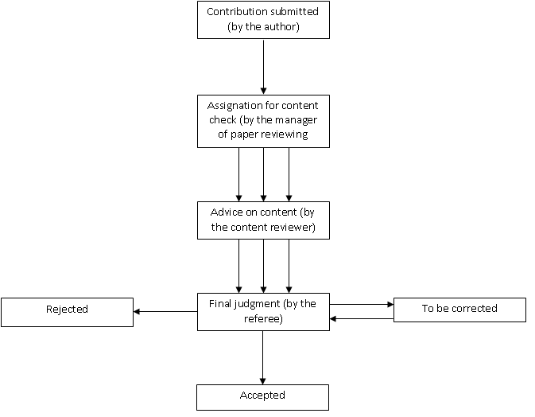

1. Main actors and workflows in the paper reviewing module¶
1.1. Main actors¶
The module provides a reviewing tool for Indico conference organizers. In general, it consists in checking that the submitted papers are coherent with the layout and content requested by the organizers of the conference and, if not, to discuss with the author of the paper or to correct the paper directly. For a better understanding of the reviewing module we will now introduce the main actors involved in it:
The Conference Manager is the creator of the conference and he is responsible for it. He can enable or disable the reviewing module and modify all its settings.
The Manager of the Paper Review Module is responsible for the paper reviewing part of the conference.
The Referee is responsible for the contributions assigned to him by the paper review manager.
The Layout Reviewer is responsible for the layout of the papers, if they are coherent with the criteria given by the manager of the conference.
The Content Reviewer has the responsibility to give an opinion on the content of papers that are assigned to him, in order to help the referee with his judgment.

1.2. Workflows¶
Depending on the choice of the conference manager we can determine four kinds of workflow:
1.2.1. Layout reviewing workflow¶
In this case the conference manager has chosen to judge only the paper’s layout. The contribution is assigned to a layout reviewer who will judge the layout as accepted, rejected or to be corrected. If it is accepted or rejected the workflow is finished. If it has to be corrected then the layout reviewer has two choices
to send it back for correction by the author
to correct the layout himself, if needed

1.2.2. Content reviewing workflow¶
In this case the conference manager has chosen to judge only the paper’s content. The contribution is assigned to a set of content reviewers who will give their opinion on the content. Then the referee will give his final judgment by setting it as accepted, rejected or to be corrected. If it has to be corrected, the contribution is sent back to the author with the referee comments. Once it is corrected and submitted, the contribution is judged again.

1.2.3. Content and layout reviewing workflow¶
The conference manager has chosen both the contribution’s layout and content to be checked. The first step is to assign the contribution; the referee chooses the content and the layout reviewers for each contribution. Then the layout reviewer must check the layout, and if it is judged as to be corrected the contribution is sent back for correction to the author with the layout reviewer’s comments, or the layout reviewer can correct it, himself.

1.2.4. Workflow with no paper reviewing¶
The conference manager has chosen no layout check and no content check of the contributions. After the paper is submitted, it is directly accepted.